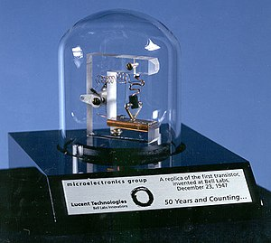
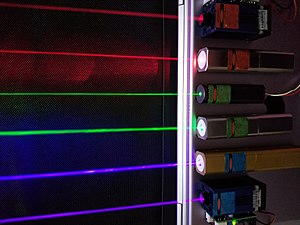

важнейшие научные открытия 20-века
20 век запомнился для физики десятками открытий
Открытия в области физики дают толчок созданию новых технологий, улучшению качества жизни, меняют мировоззрение. рассмотрим самые важные открытия в этой области
Транзисторами также называются дискретные электронные приборы, которые, выполняя функцию одиночного транзистора, имеют в своём составе несколько элементов, конструктивно являясь интегральной схемой, например, составной транзистор или многие транзисторы большой мощности. Вследствие развития учения о полупроводниках, о радиолокации учеными У. Шокли, Д. Бардиным, У. Браттейном в 1947 году был создан первый действующий биполярный транзистор. Радиоэлектронный компонент из полупроводникового материала, созданный для управления током входными сигналами в электрической цепи. Это открытие дало огромный толчок росту промышленности, а позже и росту информатики. Транзистор - основа нашей современной цифровой техники.
Результатами открытий в квантовой физике
стала возможность создавать новые материалы с новыми свойствами.
Меняя количество атомов, их расположение, состав,
ученые научились получать абсолютно новые, уникальные свойства веществ.
Одним из применений создания искусственных атомов стало создание полупроводникового лазера нового типа.
Открытие лазера - величайшее открытие ХХ века, лазеры незаменимы в медицине, широко применяются в компьютерной технике,
для сварки и резки материалов, лазерное оружие способно сбивать спутники.
Лазер - мощное информационное средство. Полупроводниковые лазеры широко применяются в информатике.

Открытие транзистора,
а также открытие деления урана под воздействием электрического облучения и открытие лазера -
величайшие открытия ХХ века. Многие достижения современной науки и техники были сделаны благодаря
величайшим открытиям ученых-физиков. Телевидение, авиация, освоение космоса, развитие компьютерной техники -
это малая часть того, что дали человечеству эти великие открытия. Расщепление атомного ядра таит в
себе огромную силу, это неиссякаемый источник энергии, возможность получения тепла и электричества.
Квантовая теория
В 1880-е годы был экспериментально получен спектр излучения абсолютно чёрного тела; распределение энергии по частотам оказалось несогласованным со всеми имевшимися теориями, особенно для длинных (инфракрасных) волн. Правильную формулу подобрал в 1900 году Макс Планк. Несколькими неделями позже он выяснил, что эта формула может быть строго доказана, если сделать допущение, что излучение и поглощение энергии происходит порциями не меньше некоторого порога (кванта), пропорционального частоте волны. Сам Планк вначале рассматривал такую модель как чисто математический трюк; даже много позже, в 1914 году,
Синтез идей де Бройля и Гейзенберга осуществил Эрвин Шрёдингер, который в 1926 году создал «волновую механику» на базе выведенного им уравнения Шрёдингера для нового объекта — волновой функции. Новая механика, как показал сам Шрёдингер, эквивалентна матричной: элементы матрицы Гейзенберга, с точностью до множителя — собственные функции оператора Гамильтона, а собственными значениями оказалась квантованная энергия. В таком виде волновая механика была удобнее матричной, и вскоре стала общепризнанной. Первоначально Шрёдингер считал, что амплитуда волновой функции описывает плотность заряда, но этот подход был быстро отвергнут, и было принято предложение Борна (1926 год) истолковывать её как плотность вероятности обнаружения частицы